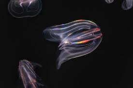

Many deep-sea animals develop large sensitive eyes to detect the faintest hint of light. Since sunlight cannot reach the deep ocean, these adaptations help creatures navigate in near-total darkness.
Some species use bioluminescence — the ability to create their own light. This glowing effect helps them attract prey, confuse predators, or communicate in the blackness of the deep sea.

To survive intense pressure, many animals have soft and flexible bodies. Fish that live deep underwater often have reduced bones or even no bones at all, allowing them to withstand crushing ocean depths.

Food can be rare in the deep sea, so creatures like anglerfish have large mouths and stretchy stomachs. These adaptations allow them to eat almost anything they can catch, improving their chances of survival.